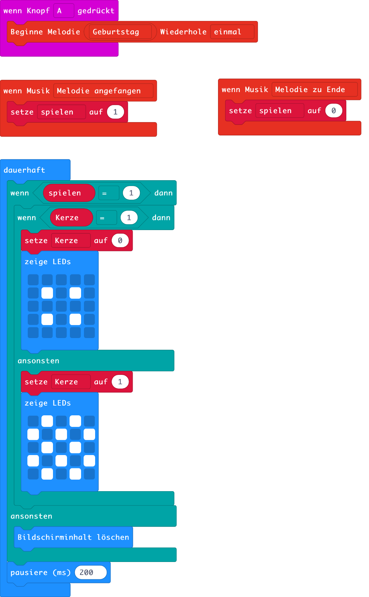
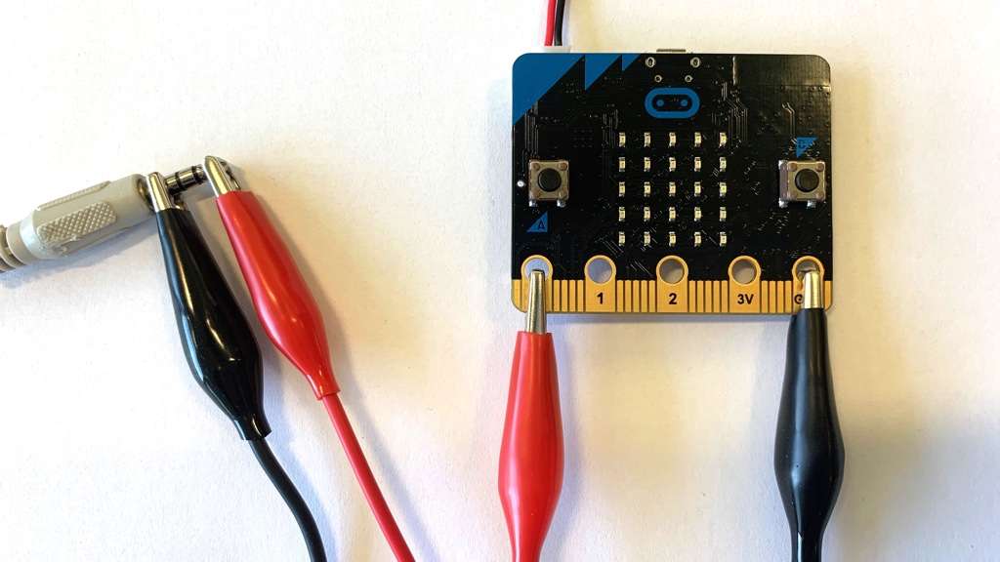
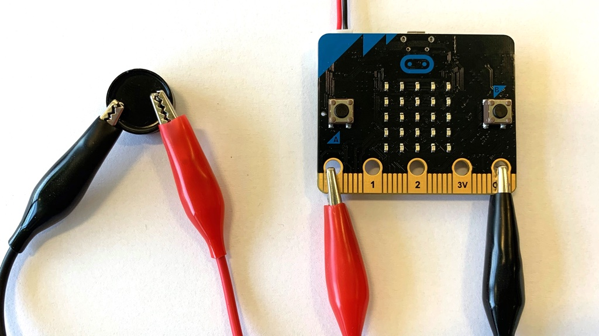
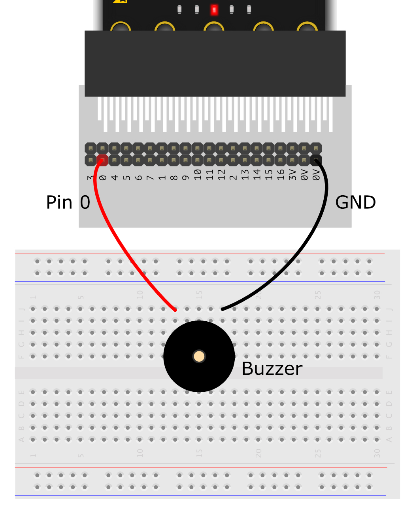
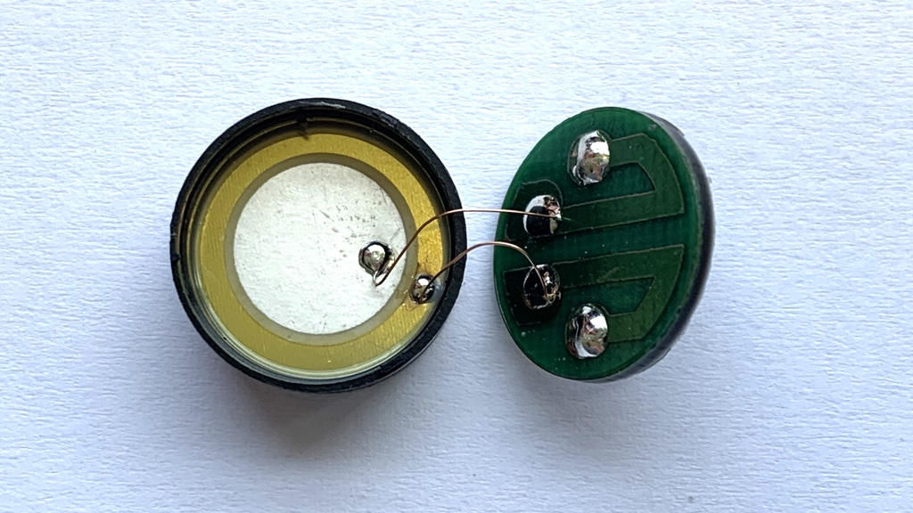

Happy Birthday
Der micro:bit ist auch musikalisch. Erstelle in Makecode ein neues Programm. Im Bereich Musik findest du die Befehle um den micro:bit zum Tönen zu bringen. Mit den Befehlen spiele Note x für y und pausiere (ms) x kann man einen eigenen Song programmieren. Der Befehl Beginne Melodie x Wiederhole y, spielt einen ganzen Song.
Der micro:bit soll so programmiert werden, dass er beim Tastendruck A ein Geburtstagslied spielt. Da das Lied alleine etwas langweilig ist, soll während dem Lied ein Kuchen mit Kerzen angezeigt werden. Das Programm ist in Abb. 1. gezeigt.
Wenn die Taste A gedrückt wird, wird der Befehl Beginne Melodie Geburtstag Wiederhole einmal ausgeführt und das Lied wird gespielt. Du benötigst eine Variable spielen, welche den Wert 1 hat, wenn die Musik gespielt wird und sonst den Wert 0. Im Bereich Musik gibt es die Befehle Musik bei Melodie angefangen und Musik bei Melodie zu Ende, mit denen du die Variable spielen entsprechend setzen kannst.
Im Zangenblock dauerhaft wird die Animation des Kuchens gemacht. Falls die Variable spielen den Wert 1 hat, soll der Kuchen angezeigt werden, ansonsten wird der Bildschirm gelöscht. Für die Animation des Kuchens, brauchst du eine weitere Variable mit dem Namen Kerze. Sie soll je nach Bild eine andere Zahl haben. In einem Zeitabstand von 0.2 Sekunden soll das Bild wechseln.

Abb. 1 – Programm für das Geburtstagslied
Das Programm kann im Webbrowser getestet werden. Wenn du Kopfhörer dabei hast, schliesse diese wie in Abb. 2 gezeigt an den micro:bit an. Verwende dazu Kabel mit den Krokodilklemmen. Keine Angst, der micro:bit arbeitet nur mit 3.3 Volt. Das ist völlig ungefährlich.

Abb. 2 – Kopfhörer als Lautsprecher
Falls du keinen Kopfhörer dabei hast, kannst du auch den Piezo-Buzzer aus der Kiste verwenden. Das ist ein Zylinderförmiges schwarzes Bauteil mit einem Loch in der Mitte. Es hat zwei Beinchen, die als Kontakte dienen. Du kannst den Buzzer direkt mit den Krokodilklemmen anschliessen, siehe Abb. 3, oder die Steckplatine benutzen, siehe Abb 4.

Abb. 3 – Piezo-Buzzer als Lautsprecher

Abb. 4 – Piezo-Buzzer als Lautsprecher auf Steckplatine
Piezo-Buzzer
Ein Piezo-Buzzer besteht aus zwei Metallplättchen, zwischen denen sich spezielle Kristallschicht befindet, siehe Abb. 5. Wenn man diese Kristallschicht zusammendrückt, wird mechanische Energie in elektrische Energie umgewandelt und es entsteht eine elektrische Spannung an den Metallplättchen. Das wird zum Beispiel bei einem elektrischen Feuerzeug benutzt um einen Funken zu erzeugen, oder bei einem Mikrofon um Schallwellen in elektrische Signale zu verwandeln.

Abb. 5 – Piezo-Buzzer geöffnet
Auf der anderen Seite verformt sich die Kristallschicht, wenn man eine Spannung an sie anlegt. Auf diese Weise kann elektrische Energie in mechanische umgewandelt werden. Genau auf diese Weise funktioniert der Piezo-Buzzer. Wenn die Spannung ganz schnell umgepolt wird, verformt sich der Kristall so schnell, dass Luftdruckschwankungen entstehen, die wir dann als Ton hören können. Falls du wissen möchtest, ist unten im Unterkapitel Links ein Youtube-Video dazu verlinkt.
Aufgaben
- Programmiere eine eigene Melodie.
- Erstelle ein Musikplayer. Wenn man auf die Taste A drückt startet oder stoppt die Musik. Mit der Taste B kann man auf das nächste Lied wechseln.
Links
Autor: T. Jenni
Letzte Änderung: 14. Mai 2021

Einsteigerkurs für den BBC micro:bit von T. Jenni, et al. ist lizenziert unter einer Creative Commons Namensnennung - Nicht-kommerziell - Weitergabe unter gleichen Bedingungen 4.0 International Lizenz.